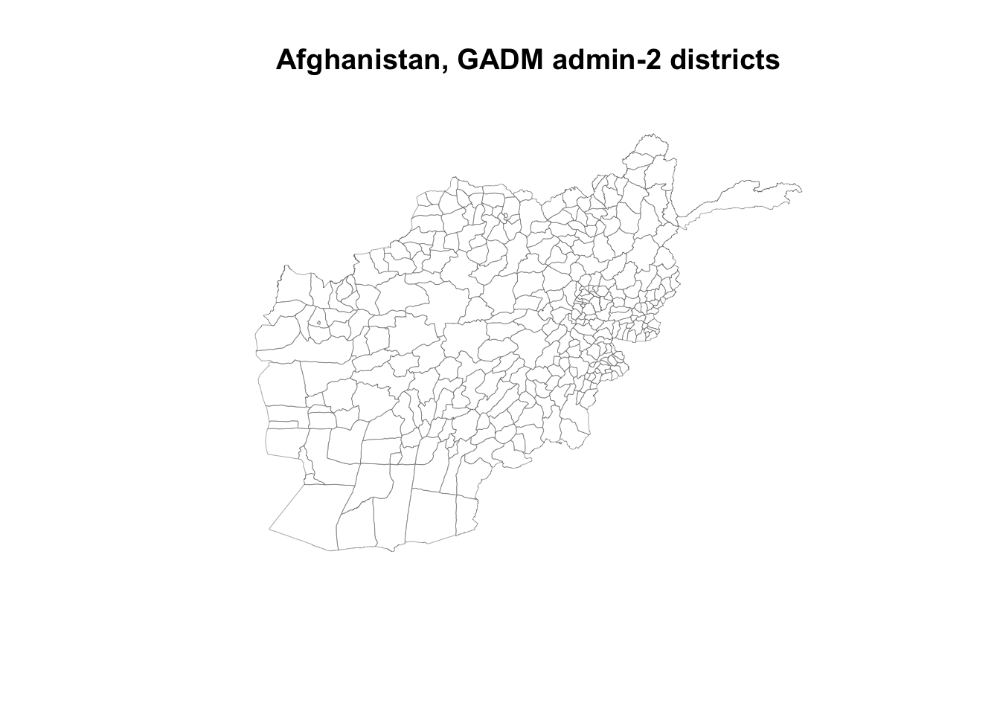
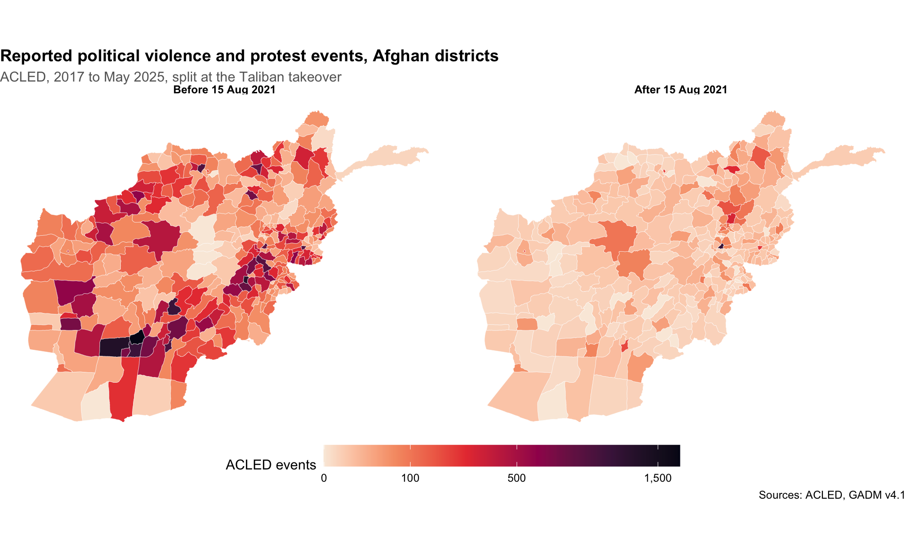
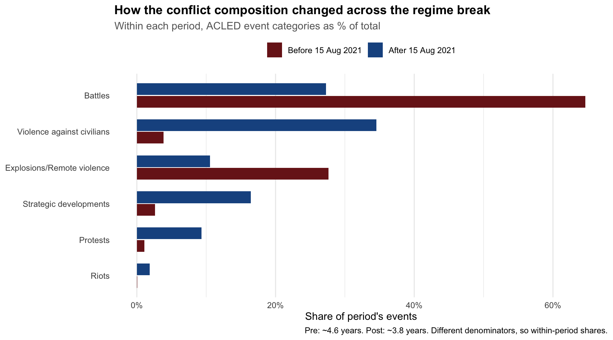
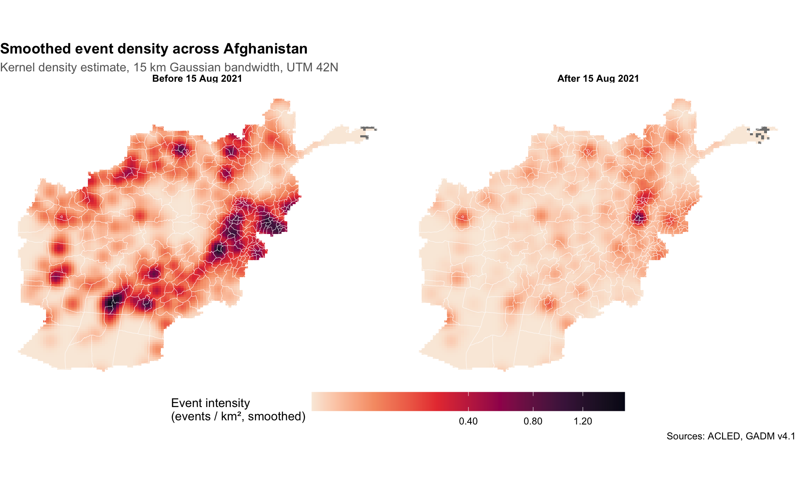
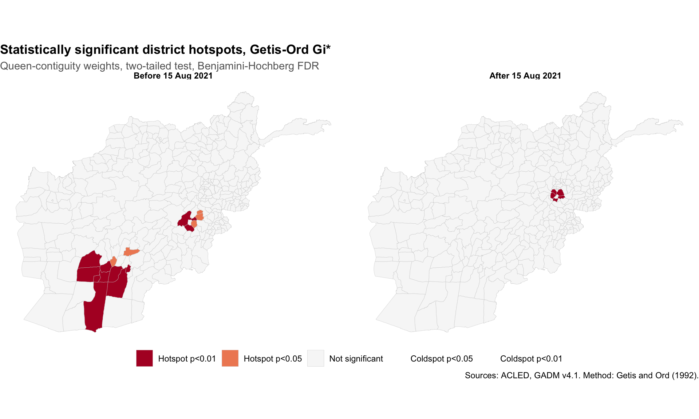
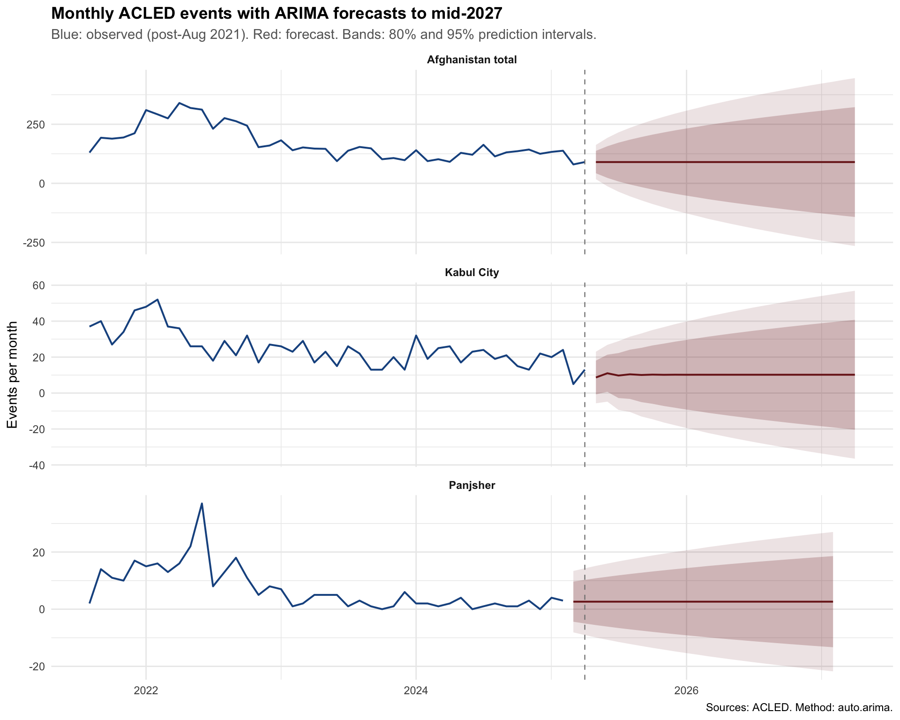

Show code
library(dplyr)
library(here)
library(lubridate)
library(geodata)
library(sf)Sajjad Sharifi
June 5, 2026
Where in Afghanistan has political violence concentrated between 2017 and 2025, where is it intensifying, and how did the August 2021 regime change reshape the spatial pattern?
Three findings dominate this analysis. First, Afghanistan’s conflict footprint after August 2021 is not a smaller version of the pre-2021 one; it is structurally different in volume, geography, and category. Battles fell from 62% of events to 30%, violence against civilians rose from 4% to 34%, and the southern Pashtun war belt that dominated the insurgency collapsed almost entirely. Second, the only statistically clustered conflict region remaining in the country is the Panjshir-Andarab resistance belt: six adjacent districts that were minor conflict areas before 2021 are now front-line zones of the National Resistance Front. Kabul has the highest absolute event count but does not cluster, its violence is a point phenomenon without spatial spread. Third, ARIMA forecasts find no trend signal in the post-2021 data and project the current ~120 events per month nationally as a stable equilibrium through mid-2027. Anything dramatically different requires a shock the time series cannot anticipate.
ACLED political violence events, January 2017 to May 2025, retrieved via the official acledR client. ACLED’s Afghanistan coverage begins January 2017, which constrains the time window. District boundaries from GADM v4.1.
Total events: 68034 Date range: 2017-01-01 to 2025-05-27 Distinct provinces: 34 GADM v4.1 admin-2 polygons give us roughly 400 Afghan districts. The first time this runs it downloads the file (about 5 MB), subsequent runs load from the cached file in data/raw/.
Districts: 328 Columns: GID_0, COUNTRY, GID_1, NAME_1, NL_NAME_1, GID_2, NAME_2, VARNAME_2, NL_NAME_2, TYPE_2, ENGTYPE_2, CC_2, HASC_2, geometry 
Each event has a latitude and longitude. We treat them as points, drop the few with missing coordinates, then do a spatial join so each event is tagged with the district polygon that contains it. We then count events per district in two periods: before the Taliban takeover (15 August 2021) and after.
library(tidyr)
# Convert events to sf points (drop those without coordinates)
afg_pts <- afg |>
filter(!is.na(latitude), !is.na(longitude)) |>
mutate(event_date = as.Date(event_date)) |>
st_as_sf(coords = c("longitude", "latitude"), crs = 4326)
# Make sure boundaries are in the same CRS
afg_adm2 <- st_transform(afg_adm2, 4326)
# Spatial join: each event gets the district it falls inside
afg_pts <- st_join(
afg_pts,
afg_adm2[, c("GID_2", "NAME_1", "NAME_2")],
join = st_within
)
# Tag period (Aug 15, 2021 is when Kabul fell)
afg_pts <- afg_pts |>
mutate(period = if_else(event_date < as.Date("2021-08-15"),
"pre_Aug2021", "post_Aug2021"))
# Count events per district per period
district_counts <- afg_pts |>
st_drop_geometry() |>
filter(!is.na(GID_2)) |>
count(GID_2, NAME_1, NAME_2, period, name = "events") |>
pivot_wider(names_from = period, values_from = events, values_fill = 0)
# Diagnostics
cat("Total events:", nrow(afg_pts), "\n")Total events: 68034 Events matched to a district: 68029 Events with no district match: 5 Districts with at least one event: 326 The map below shows reported events per district in the two periods. Districts in grey-yellow had few events, districts in dark red-black had many. Color uses a square-root scale, which gives small counts visible color while keeping high-count districts (Kabul, Kandahar, Nangarhar) distinguishable. Note the two periods are different lengths (roughly 4.6 years before, 3.8 years after) so raw counts are not directly comparable in magnitude, but the spatial reorganization is the point.
library(ggplot2)
library(scales)
# Join counts back to district polygons
afg_adm2_counts <- afg_adm2 |>
left_join(district_counts, by = c("GID_2", "NAME_1", "NAME_2")) |>
mutate(
pre_Aug2021 = replace_na(pre_Aug2021, 0),
post_Aug2021 = replace_na(post_Aug2021, 0)
)
# Long format for facetting
afg_long <- afg_adm2_counts |>
pivot_longer(
cols = c(pre_Aug2021, post_Aug2021),
names_to = "period",
values_to = "events"
) |>
mutate(period = factor(period,
levels = c("pre_Aug2021", "post_Aug2021"),
labels = c("Before 15 Aug 2021",
"After 15 Aug 2021")))
# Map
p <- ggplot(afg_long) +
geom_sf(aes(fill = events), color = "white", linewidth = 0.1) +
scale_fill_viridis_c(
option = "rocket",
direction = -1,
trans = "sqrt",
name = "ACLED events",
labels = label_comma(),
breaks = c(0, 100, 500, 1500, 3000, 5000)
) +
facet_wrap(~ period) +
labs(
title = "Reported political violence and protest events, Afghan districts",
subtitle = "ACLED, 2017 to May 2025, split at the Taliban takeover",
caption = "Sources: ACLED, GADM v4.1"
) +
theme_void(base_size = 11) +
theme(
legend.position = "bottom",
legend.key.width = unit(2, "cm"),
strip.text = element_text(face = "bold"),
plot.title = element_text(face = "bold"),
plot.subtitle = element_text(color = "grey40")
)
p
The choropleth shows the spatial pattern. The ranking gives the specific places. The two tables below list the 20 districts with the most ACLED events in each period. Reading them side by side shows two things: which districts dominated the pre-2021 war, and which districts remained or became hotspots under the new regime.
# Pre-compute each district's national rank in the pre-period
# Using GID_2 (unique ID) instead of NAME_2 to avoid duplicate-name bugs
pre_ranks <- district_counts |>
mutate(pre_rank = dense_rank(desc(pre_Aug2021))) |>
select(GID_2, pre_rank)
post_ranks <- district_counts |>
mutate(post_rank = dense_rank(desc(post_Aug2021))) |>
select(GID_2, post_rank)
district_counts_ranked <- district_counts |>
left_join(pre_ranks, by = "GID_2") |>
left_join(post_ranks, by = "GID_2")
# 20 most affected in the pre-Aug 2021 period
top_pre <- district_counts_ranked |>
arrange(desc(pre_Aug2021)) |>
head(20) |>
transmute(
Rank = row_number(),
Province = NAME_1,
District = NAME_2,
`Pre-Aug 2021 events` = pre_Aug2021,
`Post-Aug 2021 events` = post_Aug2021,
`% change` = paste0(round((post_Aug2021 / pre_Aug2021 - 1) * 100), "%")
)
# 20 most affected in the post-Aug 2021 period
top_post <- district_counts_ranked |>
arrange(desc(post_Aug2021)) |>
head(20) |>
transmute(
Rank = row_number(),
Province = NAME_1,
District = NAME_2,
`Post-Aug 2021 events` = post_Aug2021,
`Pre-Aug 2021 events` = pre_Aug2021,
`Pre-rank in country` = pre_rank
)
knitr::kable(
top_pre,
caption = "Table 1. The 20 districts with the most ACLED events before 15 August 2021, with their post-period counts and the percent change."
)| Rank | Province | District | Pre-Aug 2021 events | Post-Aug 2021 events | % change |
|---|---|---|---|---|---|
| 1 | Hilmand | Nahri Sarraj | 1701 | 26 | -98% |
| 2 | Hilmand | Nad Ali | 1338 | 19 | -99% |
| 3 | Ghazni | Ghazni | 1274 | 91 | -93% |
| 4 | Uruzgan | Tirin Kot | 1090 | 38 | -97% |
| 5 | Hilmand | Lashkargah | 1084 | 75 | -93% |
| 6 | Kandahar | Kandahar City | 971 | 196 | -80% |
| 7 | Balkh | Balkh | 940 | 15 | -98% |
| 8 | Nangarhar | Jalal abad | 936 | 237 | -75% |
| 9 | Logar | Puli Alam | 887 | 48 | -95% |
| 10 | Kabul | Kabul City | 852 | 1127 | 32% |
| 11 | Kunduz | Kunduz | 804 | 110 | -86% |
| 12 | Ghazni | Andar | 795 | 9 | -99% |
| 13 | Kandahar | Shah Wali Kot | 745 | 6 | -99% |
| 14 | Baghlan | Puli Khumri | 745 | 107 | -86% |
| 15 | Wardak | Sayid Abad | 729 | 16 | -98% |
| 16 | Kandahar | Maywand | 725 | 7 | -99% |
| 17 | Farah | Farah City | 721 | 49 | -93% |
| 18 | Hilmand | Nawa-i-Barak Zayi | 707 | 6 | -99% |
| 19 | Paktya | Gardez | 673 | 56 | -92% |
| 20 | Nangarhar | Khogyani | 623 | 23 | -96% |
| Rank | Province | District | Post-Aug 2021 events | Pre-Aug 2021 events | Pre-rank in country |
|---|---|---|---|---|---|
| 1 | Kabul | Kabul City | 1127 | 852 | 10 |
| 2 | Panjshir | Panjsher | 303 | 17 | 195 |
| 3 | Takhar | Taluqan | 273 | 293 | 55 |
| 4 | Nangarhar | Jalal abad | 237 | 936 | 8 |
| 5 | Hirat | Hirat City | 219 | 392 | 44 |
| 6 | Balkh | Mazar-i-Sharif | 207 | 183 | 91 |
| 7 | Kandahar | Kandahar City | 196 | 971 | 6 |
| 8 | Baghlan | Andarab | 170 | 22 | 190 |
| 9 | Badakhshan | Fayzabad | 159 | 325 | 50 |
| 10 | Parwan | Chaharikar | 117 | 165 | 100 |
| 11 | Kapisa | Kohistan | 116 | 36 | 176 |
| 12 | Panjshir | Hisa-I-Duwum Panjsher | 112 | 6 | 205 |
| 13 | Kunduz | Kunduz | 110 | 804 | 11 |
| 14 | Baghlan | Puli Khumri | 107 | 745 | 13 |
| 15 | Ghor | Chaghcharan | 101 | 431 | 36 |
| 16 | Panjshir | Hisa-I-Awali Panjsher | 101 | 1 | 210 |
| 17 | Khost | Khost (Matun) | 96 | 436 | 34 |
| 18 | Ghazni | Ghazni | 91 | 1274 | 3 |
| 19 | Baghlan | Khost Wa Firing | 86 | 43 | 169 |
| 20 | Kunar | Asad abad | 84 | 416 | 40 |
Table 2 makes the regime break concrete. Kabul City is now the dominant conflict node, accounting for over a third of all post-2021 events. More striking is the emergence of a new resistance belt in and around the Panjshir valley: six of the post-period top 20 (Panjsher, Hisa-i-Awali Panjsher, Hisa-i-Duwum Panjsher, Andarab, Kohistan, Khost Wa Firing) sit in or adjacent to Panjshir, all minor conflict districts before 2021 (national ranks between 224 and 322), now front-line zones of the National Resistance Front. The southern Pashtun war belt has the opposite trajectory: the four Helmand districts and two of three Kandahar districts that dominated the pre-war list are completely gone from the post-war top 20. Kandahar City and Jalalabad remain top 10 in both periods but for different reasons, urban ISKP attacks and Taliban policing replacing battles with the Republic. The map of organized violence in Afghanistan effectively migrated 200 to 300 kilometers northeast across the regime break.
A simple count says conflict dropped. A composition view says what kind of conflict remained. The chart below compares the share of ACLED event categories within each period. Within-period percentages make the two periods comparable even though their absolute event counts differ by roughly 5x.
# Event counts and shares by period and type
event_type_breakdown <- afg_pts |>
st_drop_geometry() |>
count(period, event_type, name = "events") |>
group_by(period) |>
mutate(
share = events / sum(events) * 100,
period_total = sum(events)
) |>
ungroup() |>
mutate(period = factor(period,
levels = c("pre_Aug2021", "post_Aug2021"),
labels = c("Before 15 Aug 2021",
"After 15 Aug 2021")))
# Print the table for the prose
event_type_breakdown |>
select(period, event_type, events, share) |>
arrange(period, desc(share)) |>
print(n = Inf)# A tibble: 12 × 4
period event_type events share
<fct> <chr> <int> <dbl>
1 Before 15 Aug 2021 Battles 39003 64.7
2 Before 15 Aug 2021 Explosions/Remote violence 16679 27.7
3 Before 15 Aug 2021 Violence against civilians 2332 3.87
4 Before 15 Aug 2021 Strategic developments 1584 2.63
5 Before 15 Aug 2021 Protests 669 1.11
6 Before 15 Aug 2021 Riots 39 0.0647
7 After 15 Aug 2021 Violence against civilians 2670 34.5
8 After 15 Aug 2021 Battles 2109 27.3
9 After 15 Aug 2021 Strategic developments 1271 16.4
10 After 15 Aug 2021 Explosions/Remote violence 816 10.6
11 After 15 Aug 2021 Protests 720 9.32
12 After 15 Aug 2021 Riots 142 1.84 # Bar chart, percentage view
p_types <- ggplot(event_type_breakdown,
aes(x = reorder(event_type, share, FUN = max),
y = share, fill = period)) +
geom_col(position = position_dodge(width = 0.7), width = 0.65) +
coord_flip() +
scale_fill_manual(values = c("Before 15 Aug 2021" = "#7a1d1d",
"After 15 Aug 2021" = "#1a5490")) +
scale_y_continuous(labels = function(x) paste0(x, "%")) +
labs(
x = NULL,
y = "Share of period's events",
title = "How the conflict composition changed across the regime break",
subtitle = "Within each period, ACLED event categories as % of total",
fill = NULL,
caption = "Pre: ~4.6 years. Post: ~3.8 years. Different denominators, so within-period shares."
) +
theme_minimal(base_size = 11) +
theme(
legend.position = "top",
plot.title = element_text(face = "bold"),
plot.subtitle = element_text(color = "grey40"),
panel.grid.major.y = element_blank()
)
p_types
Three patterns stand out. First, battles fell from roughly 62% of pre-2021 events to 30% post-2021, consistent with the disappearance of the armed insurgency once the Republic collapsed. Second, violence against civilians rose from 4% to 34%, even as absolute volume fell roughly 5x; the regime that emerged is consolidating, not contesting. Third, strategic developments climbed from 3% to 17%, picking up Taliban policy announcements that ACLED logs but were uncommon during active war. Protests also rose from near-zero to about 8%, dominated by women’s rights demonstrations after the December 2022 university ban. None of this is causal evidence. It is a description of how event mix shifted at the regime break, and it confirms the structural-break framing: the two periods are different phenomena, not the same conflict at different intensity.
The choropleth and rankings work at the district level, which is convenient but somewhat arbitrary; ACLED events don’t actually stop at administrative borders. A kernel density estimate (KDE) smooths event locations into a continuous surface, treating each event as a small “puff” of mass and summing them. Districts disappear, only the spatial pattern of where conflict concentrates remains.
Implementation: project to UTM zone 42N so units are meters, build a planar point pattern bounded by the Afghan border, and compute density with a 15 km Gaussian bandwidth (sigma = 15,000 m). The bandwidth is a modeling choice; smaller values give more local detail, larger values smooth more aggressively. Fifteen kilometers captures district-to-province scale patterns.
library(spatstat)
# Project to UTM 42N (EPSG:32642), units in meters
afg_adm2_proj <- st_transform(afg_adm2, 32642)
afg_pts_proj <- st_transform(afg_pts, 32642)
# Country outline as the observation window
afg_outline <- st_union(afg_adm2_proj)
W <- as.owin(afg_outline)
# Helper to compute density for a subset of points
build_density <- function(pts_sf, win, sigma_m = 15000) {
coords <- st_coordinates(pts_sf)
pp <- ppp(x = coords[, "X"], y = coords[, "Y"],
window = win, check = FALSE)
density(pp, sigma = sigma_m, edge = TRUE)
}
pre_pts <- afg_pts_proj |> filter(period == "pre_Aug2021")
post_pts <- afg_pts_proj |> filter(period == "post_Aug2021")
pre_density <- build_density(pre_pts, W, sigma_m = 15000)
post_density <- build_density(post_pts, W, sigma_m = 15000)
# Convert spatstat 'im' surfaces to data frames for ggplot
# Multiply by 1e6 to convert events/m² to events/km², easier to read
density_df <- bind_rows(
as.data.frame(pre_density) |> mutate(value = value * 1e6,
period = "Before 15 Aug 2021"),
as.data.frame(post_density) |> mutate(value = value * 1e6,
period = "After 15 Aug 2021")
) |>
filter(!is.na(value)) |>
mutate(period = factor(period,
levels = c("Before 15 Aug 2021",
"After 15 Aug 2021")))
# Plot
p_kde <- ggplot(density_df, aes(x = x, y = y, fill = value)) +
geom_raster() +
geom_sf(data = afg_adm2_proj, inherit.aes = FALSE,
fill = NA, color = "white", linewidth = 0.1) +
facet_wrap(~ period) +
scale_fill_viridis_c(
option = "rocket", direction = -1, trans = "sqrt",
name = "Event intensity\n(events / km², smoothed)",
labels = scales::label_number(accuracy = 0.01)
) +
coord_sf(crs = 32642) +
labs(
title = "Smoothed event density across Afghanistan",
subtitle = "Kernel density estimate, 15 km Gaussian bandwidth, UTM 42N",
caption = "Sources: ACLED, GADM v4.1"
) +
theme_void(base_size = 11) +
theme(
legend.position = "bottom",
legend.key.width = unit(2, "cm"),
strip.text = element_text(face = "bold"),
plot.title = element_text(face = "bold"),
plot.subtitle = element_text(color = "grey40")
)
p_kde
Two things become clearer when the districts disappear. First, the pre-2021 conflict footprint was a continuous belt, not a scatter of independent hotspots: the southern arc from Helmand through Kandahar curves up through Ghazni and Wardak into Kabul, then drops east into the Nangarhar to Kunar corridor along the Pakistan border. Treating districts as the unit of analysis hides this continuity. Second, the post-2021 panel shows a Panjshir-Andarab signal at least as bright as the residual southern patches, confirming the ranking-table finding at the density-surface level: the resistance belt is real, not an artifact of how district boundaries happen to be drawn. Small blocky patches in the far northeast (the Wakhan corridor) are edge effects where few events meet a long thin window, not actual conflict signals.
The choropleth, KDE, and ranking all describe where events concentrate. None of them tells us whether a given district’s count is high enough to call a hotspot, holding the rest of the country fixed. Getis-Ord Gi* (Getis and Ord, 1992) measures exactly this: for each district, it compares the local count (district plus immediate neighbors) to what we would expect if events were spread evenly across the country, returning a z-score. Positive values flag hotspots, negative values flag coldspots. We use queen-contiguity spatial weights (districts touching at any corner count as neighbors), and apply Benjamini-Hochberg FDR correction because we are running ~400 tests, one per district.
library(spdep)
# Queen-contiguity neighbors and row-standardized spatial weights
nb <- poly2nb(afg_adm2_counts, queen = TRUE)
W <- nb2listw(nb, style = "W", zero.policy = TRUE)
# Local Gi* z-scores for each period
gi_pre <- localG(afg_adm2_counts$pre_Aug2021, W, zero.policy = TRUE)
gi_post <- localG(afg_adm2_counts$post_Aug2021, W, zero.policy = TRUE)
# Attach z-scores, raw p-values, and FDR-corrected p-values to polygons
afg_adm2_counts <- afg_adm2_counts |>
mutate(
gi_pre_z = as.numeric(gi_pre),
gi_post_z = as.numeric(gi_post),
gi_pre_p = 2 * (1 - pnorm(abs(gi_pre_z))),
gi_post_p = 2 * (1 - pnorm(abs(gi_post_z))),
gi_pre_pfdr = p.adjust(gi_pre_p, method = "BH"),
gi_post_pfdr = p.adjust(gi_post_p, method = "BH")
)
# Classifier
classify_gi <- function(z, p) {
dplyr::case_when(
z > 0 & p <= 0.01 ~ "Hotspot p<0.01",
z > 0 & p <= 0.05 ~ "Hotspot p<0.05",
z < 0 & p <= 0.01 ~ "Coldspot p<0.01",
z < 0 & p <= 0.05 ~ "Coldspot p<0.05",
TRUE ~ "Not significant"
)
}
afg_long_gi <- afg_adm2_counts |>
mutate(
pre_class = classify_gi(gi_pre_z, gi_pre_pfdr),
post_class = classify_gi(gi_post_z, gi_post_pfdr)
) |>
select(NAME_1, NAME_2, pre_class, post_class) |>
pivot_longer(
cols = c(pre_class, post_class),
names_to = "period",
values_to = "gi_class"
) |>
mutate(
period = factor(period,
levels = c("pre_class", "post_class"),
labels = c("Before 15 Aug 2021", "After 15 Aug 2021")),
gi_class = factor(gi_class,
levels = c("Hotspot p<0.01", "Hotspot p<0.05",
"Not significant",
"Coldspot p<0.05", "Coldspot p<0.01"))
)
gi_colors <- c(
"Hotspot p<0.01" = "#b2182b",
"Hotspot p<0.05" = "#ef8a62",
"Not significant" = "#f7f7f7",
"Coldspot p<0.05" = "#67a9cf",
"Coldspot p<0.01" = "#2166ac"
)
p_gi <- ggplot(afg_long_gi) +
geom_sf(aes(fill = gi_class), color = "grey80", linewidth = 0.1) +
scale_fill_manual(values = gi_colors, name = NULL, drop = FALSE) +
facet_wrap(~ period) +
labs(
title = "Statistically significant district hotspots, Getis-Ord Gi*",
subtitle = "Queen-contiguity weights, two-tailed test, Benjamini-Hochberg FDR",
caption = "Sources: ACLED, GADM v4.1. Method: Getis and Ord (1992)."
) +
theme_void(base_size = 11) +
theme(
legend.position = "bottom",
strip.text = element_text(face = "bold"),
plot.title = element_text(face = "bold"),
plot.subtitle = element_text(color = "grey40")
)
p_gi
Pre-Aug 2021 classification counts: class n
1 Hotspot p<0.01 12
2 Hotspot p<0.05 5
3 Not significant 311
Post-Aug 2021 classification counts: class n
1 Hotspot p<0.01 5
2 Not significant 323The Gi* result sharpens the picture. In the pre-2021 period, only two clusters survive FDR correction: the southern Helmand-Kandahar-Uruzgan war belt, and a smaller cluster around Kabul-Logar. Many high-count border districts (Nangarhar, Kunar, Khost) do not pass, which means their event counts are high in absolute terms but not statistically elevated relative to their neighbors after correcting for 400 simultaneous tests. In the post-2021 period the map collapses to a single cluster: Panjshir and Andarab. The resistance belt is the only remaining clustered conflict region in the country.
Worth pausing on: Kabul City, the highest-count district nationally in the post period, does NOT appear as a Gi* hotspot. This is intentional behavior, not a bug. Gi* detects spatial clusters, not isolated outliers. Kabul has a high count, but its immediate neighbors (other Kabul province districts) have low counts, so the local-mean-to-global-mean ratio does not spike. Panjshir has moderately high counts across multiple adjacent districts, which is exactly the signature Gi* is built for. The methodological reading: the resistance belt is the only spatially organized conflict region remaining in Afghanistan. Kabul-centered violence is a point phenomenon without spatial spread.
We project monthly event counts forward 24 months using auto.arima, which scans ARIMA model space and picks the best fit by AICc. Three series: the national total, Kabul City (the dominant post-2021 hotspot), and Panjsher (the resistance belt). We restrict the training data to post-Aug 2021 only, since pre-2021 data is a structurally different conflict regime and would dominate the model. We also drop the last partial month (May 2025) so the model trains only on complete months.
library(forecast)
# Monthly counts, post-Aug 2021 only, full months only
monthly_data <- afg_pts |>
st_drop_geometry() |>
filter(event_date >= as.Date("2021-08-15"),
!is.na(GID_2)) |>
mutate(year_month = floor_date(event_date, "month"))
last_month <- max(monthly_data$year_month)
monthly_data <- monthly_data |> filter(year_month < last_month)
# Three focal series
nat_monthly <- monthly_data |> count(year_month, name = "events")
kabul_monthly <- monthly_data |> filter(NAME_2 == "Kabul City") |>
count(year_month, name = "events")
panjsher_monthly <- monthly_data |> filter(NAME_2 == "Panjsher") |>
count(year_month, name = "events")
# Helper: pad with zero months, fit auto.arima, return forecast
fit_and_forecast <- function(df, h = 24) {
all_months <- seq(min(df$year_month), max(df$year_month), by = "month")
d_full <- tibble(year_month = all_months) |>
left_join(df, by = "year_month") |>
mutate(events = replace_na(events, 0))
ts_obj <- ts(d_full$events,
start = c(year(min(d_full$year_month)),
month(min(d_full$year_month))),
frequency = 12)
m <- auto.arima(ts_obj)
fc <- forecast(m, h = h)
list(
observed = d_full,
forecast = tibble(
year_month = seq(max(d_full$year_month) + months(1),
by = "month", length.out = h),
events = as.numeric(fc$mean),
lower_80 = as.numeric(fc$lower[, 1]),
upper_80 = as.numeric(fc$upper[, 1]),
lower_95 = as.numeric(fc$lower[, 2]),
upper_95 = as.numeric(fc$upper[, 2])
),
model = m
)
}
nat_fc <- fit_and_forecast(nat_monthly)
kabul_fc <- fit_and_forecast(kabul_monthly)
panjsher_fc <- fit_and_forecast(panjsher_monthly)
# Print which ARIMA model was selected for each series
cat("Auto-selected ARIMA models:\n")Auto-selected ARIMA models: National total: ARIMA(0,1,0) Kabul City: ARIMA(1,1,0) Panjsher: ARIMA(0,1,1) # Combine for plotting
add_series <- function(label, fit) {
list(
obs = fit$observed |> mutate(series = label),
fc = fit$forecast |> mutate(series = label)
)
}
n <- add_series("Afghanistan total", nat_fc)
k <- add_series("Kabul City", kabul_fc)
p <- add_series("Panjsher", panjsher_fc)
series_levels <- c("Afghanistan total", "Kabul City", "Panjsher")
observed_all <- bind_rows(n$obs, k$obs, p$obs) |>
mutate(series = factor(series, levels = series_levels))
forecast_all <- bind_rows(n$fc, k$fc, p$fc) |>
mutate(series = factor(series, levels = series_levels))
p_fc <- ggplot() +
geom_ribbon(data = forecast_all,
aes(x = year_month, ymin = lower_95, ymax = upper_95),
fill = "#7a1d1d", alpha = 0.12) +
geom_ribbon(data = forecast_all,
aes(x = year_month, ymin = lower_80, ymax = upper_80),
fill = "#7a1d1d", alpha = 0.22) +
geom_line(data = observed_all,
aes(x = year_month, y = events),
color = "#1a5490", linewidth = 0.7) +
geom_line(data = forecast_all,
aes(x = year_month, y = events),
color = "#7a1d1d", linewidth = 0.7) +
geom_vline(xintercept = max(observed_all$year_month),
linetype = "dashed", color = "grey50", linewidth = 0.4) +
facet_wrap(~ series, scales = "free_y", ncol = 1) +
labs(
title = "Monthly ACLED events with ARIMA forecasts to mid-2027",
subtitle = "Blue: observed (post-Aug 2021). Red: forecast. Bands: 80% and 95% prediction intervals.",
x = NULL, y = "Events per month",
caption = "Sources: ACLED. Method: auto.arima."
) +
theme_minimal(base_size = 11) +
theme(
plot.title = element_text(face = "bold"),
plot.subtitle = element_text(color = "grey40"),
strip.text = element_text(face = "bold")
)
p_fc
Three observations. First, the macro story is stabilization. Afghanistan’s total monthly event count fell sharply through 2022 and 2023, then plateaued near 120 per month by mid-2023 and stayed there. The auto-selected models project that plateau forward; nothing in the recent series argues for a trend up or down. Kabul and Panjsher show the same shape at smaller scales. The selected models confirm this: ARIMA(0,1,0) for the national total (a random walk with no drift), ARIMA(1,1,0) for Kabul, ARIMA(0,1,1) for Panjsher. All three are differenced once, with at most one lag of autocorrelation, and none of them include a drift or seasonal term, meaning the data contain no signal of a directional trend.
Second, the forecasts say what current conditions imply, not what will happen. ARIMA assumes the underlying process is stationary, which Afghan conflict has demonstrably not been since 2017 (one structural break in August 2021, several smaller shocks before and after). A regime shift, a major ISKP attack campaign, a foreign re-engagement, an NRF offensive, none of these are in the model. The flat forecasts are a baseline expectation under “no surprises,” not a prediction.
Third, the 95% prediction intervals descend below zero in all three panels. Event counts cannot be negative. This is a known limitation of Gaussian ARIMA applied to count data; the proper specification is a count-data state-space model (Poisson autoregressive, negative binomial INGARCH, or a Bayesian formulation in Stan/INLA). The current model is adequate for showing that recent dynamics give no signal of trend, but it overstates downside uncertainty. Read the bands as “the model is uncertain about the level” rather than as literal probability statements.
Read together, the forecasts confirm what the rest of the analysis already shows: Afghanistan after the regime break is not escalating, not collapsing, and not following a clear trajectory in either direction. It has settled into a low-intensity chronic state with specific persistent geographies. The Fragility Forum reading: under current conditions, expect roughly the current level through 2026. Anything dramatically different requires a shock that the time series cannot anticipate.
ACLED records reported events. Underreporting is higher in areas with limited media access and during communications disruptions. The August 2021 Taliban takeover changed both the conflict dynamic and the reporting environment, so pre and post 2021 series should not be compared without accounting for that structural break.